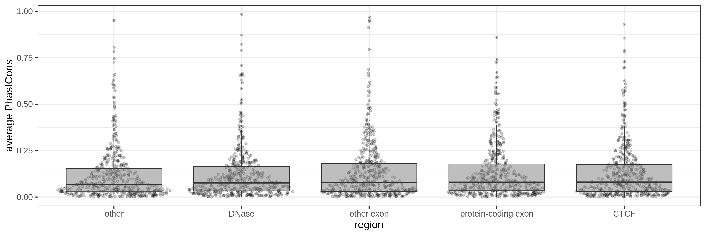
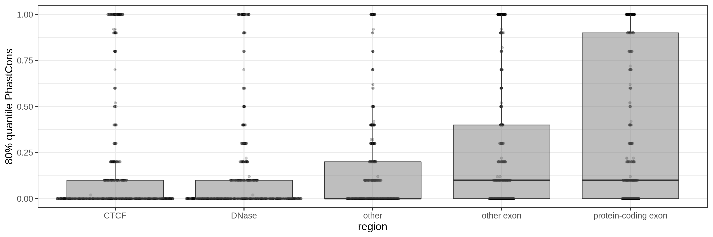
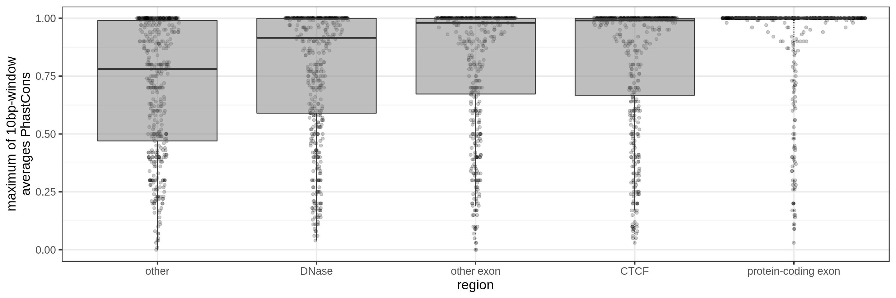
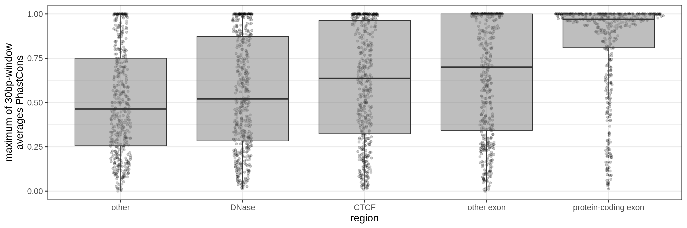
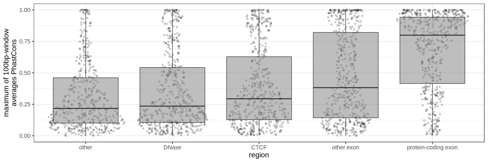
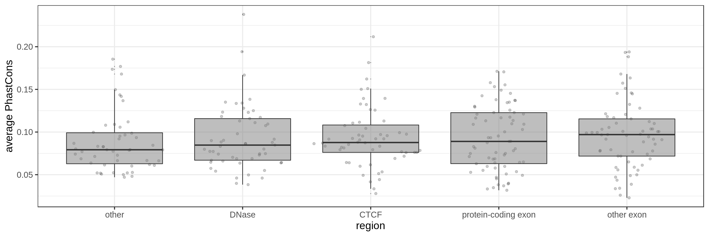
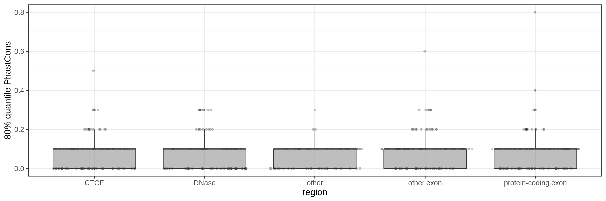
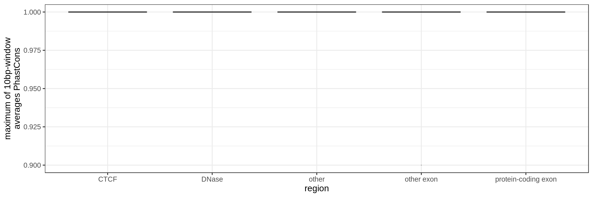
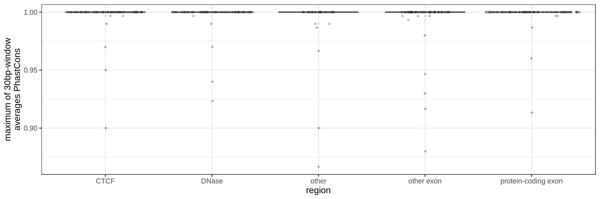
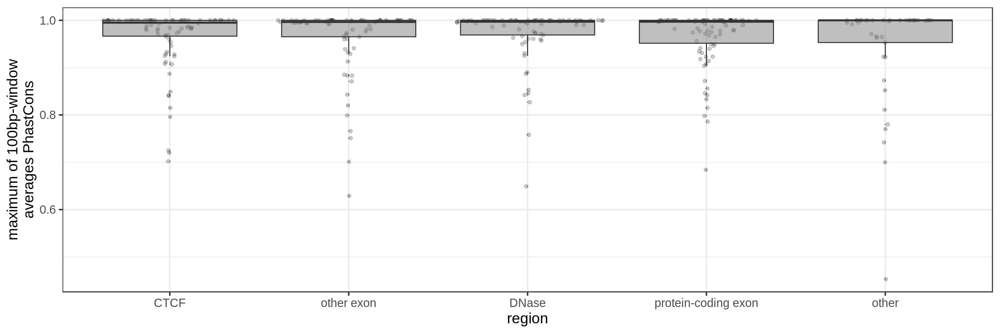

Conservation to annotate large(r) regions
Feb 25 2017 genome non-codingConservation can be used to annotate single nucleotide changes or short variants. This information helps assessing the functional impact of short variation.
What if we have larger variants, for example deletions larger than 50 bp, or larger than 1 kbp. Can we use conservation metrics? In this case the question is often not “Is the region conserved?” but rather “Is there any conserved elements in the region?”.
One approach would be to overlap the variants/deletions with known (ultra-)conserved regions. Otherwise we could work with bp-level conservation estimates. That’s what I quickly explore below.
Genomic annotation and conservation
I’ll have a look at regions overlapping:
- Insulator region: CTCF binding sites (GM12878 narrow peaks by the Broad)
- Open chromatin regions: DNase sites (GM12878 narrow peaks by the Broad for Encode)
- Protein-coding exons.
- Other “exons” (e.g. lncRNA, miRNA, pseudogenes, … but not protein-coding)
- Other, i.e. none of the above
PhastCons gives a conservation score for each base pair. As a measure across a region I try to use:
- the average
- the 80th percentile
- the maximum average in short windows (e.g. 10 bp, 30 bp or 100 bp)
The quantile and sliding-window approaches should mitigate the effect of surrounding background noise.
1 Kbp regions
First fragmenting the genome into 1 kbp regions, I select bins from the different annotation profiles.

The sliding-window approach gives the best results where we can really see different distributions for the different types of regions. Using the average across the region, the conservation distributions are similar, likely because the studied region is larger than the conserved element so there is a majority of background conservation scores.
50 Kbp regions
Same for larger regions.

Conclusions
Using the average conservation might be good for short regions (e.g. 10s-100s bp) but is not useful for large regions. We can do a bit better by using the 80th percentile of the scores, focusing on the long tail of scores in the region. A better approach yet seems to be using the maximum score across sliding windows. For 1 kbp regions, we could differentiate functional classes using windows of size 100 bp.
This kind of metric work only work for regions that are not too large. As the 50 kbp experiment shows, when the input regions get too big, it’s difficult to see much differences because all regions have some conserved sequence somewhere.